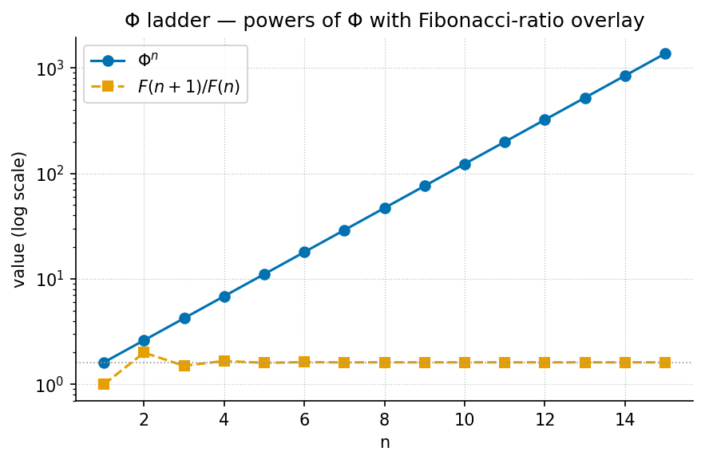
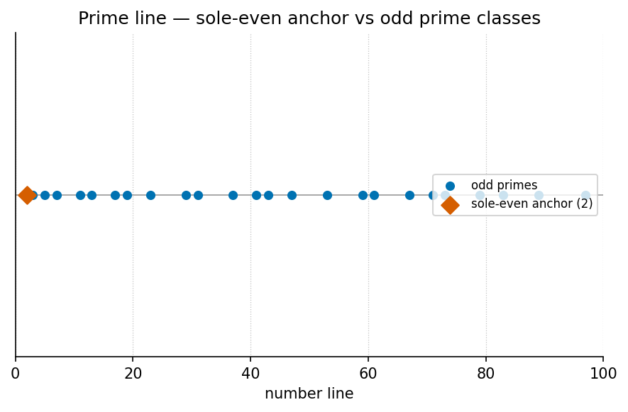

Appendix C — Mathematical Review
Reference appendix · Just-enough mathematics for the worked models.
A brief refresher on the mathematics the Infinite Octaves
Omni-Lattice formalisms rely on, with every worked number pinned to the
tested functions in src/textbook/models.py.
Nothing here is a physics claim: these are the standard mathematics of
the golden ratio, primes, exponential damping, and logarithms, which the
corpus files as catalog grammar (honesty-first)
[mendez2026masterSynthesis].
The Golden Ratio and Its Algebra
The golden ratio is the positive root of \(x^2 = x + 1\):
\[ \Phi = \frac{1 + \sqrt{5}}{2} \approx 1.6180339887 \] {#eq:appendix_math_review_phi}
From \(\Phi^2 = \Phi + 1\)
everything else follows by induction. Multiplying any power by \(\Phi\) steps the exponent up; dividing
steps it down — the algebra behind the corpus’s \(\Phi\) duality pair \(x \cdot \Phi\) and \(x/\Phi\) (phi_dual,
[mendez2026protonTheater]) and behind Fibonacci identities: \(\Phi^n = F_n \Phi + F_{n-1}\) with \(F_n\) the Fibonacci numbers.
Pinned powers (phi_powers), used throughout the octave
chapters:
| \(n\) | 1 | 2 | 3 | 4 | 5 | 6 |
|---|---|---|---|---|---|---|
| \(\Phi^n\) | 1.618034 | 2.618034 | 4.236068 | 6.854102 | 11.090170 | 17.944272 |
Each ratio of consecutive Fibonacci numbers \(\varphi_{\mathrm{fib}}(n) =
F_{n+1}/F_n\) approaches \(\Phi\) alternately from above and below
(phi_fibonacci): \(\varphi_{\mathrm{fib}}(5) = 8/5 = 1.6\)
(below) and \(\varphi_{\mathrm{fib}}(10) =
89/55 \approx 1.618182\) (above). This is why the octave term \(\Omega_n\) has two defensible
readings — the exponent convention \(\Omega_n
= \Phi^n \Omega_0\) and the subscript convention \(\Omega_n =
\varphi_{\mathrm{fib}}(n)\,\Omega_0\) — since the corpus prints
“Ωn = Φn · Ω0” ambiguously and both are implemented in
octave_term [mendez2026primeParity].

phi_powers and phi_fibonacci.The convergence behind both readings of \(\Omega_n\) is drawn in [@fig:gallery_phi_ladder]: the powers climb geometrically while the Fibonacci ratios spiral in on the same limit.
Worked check (exponent convention). With \(\Omega_0 = 1\): \(\Omega_1 = 1.618034\), \(\Omega_3 = 4.236068\), \(\Omega_6 = 17.944272\) — the table row values, to six decimals.
The Catalog Size: A Product of Register Widths
The master register
is nine digit drawers crossed with ninety-nine octave bands at an
81-digit precision register [mendez2026digitsMaster]. The size is a
single multiplication (catalog_size):
\[ 99 \times 81 = 8{,}019 \] {#eq:appendix_math_review_catalogsize}
The corpus is explicit that 8,019 is “for dashboards and agent routing, not for measuring magma” — a filing-capacity number, not a physical measurement [mendez2026digitsMaster].
Primes and the Parity Partition
A prime is an integer \(> 1\) divisible only by \(1\) and itself; the sieve of Eratosthenes generates them by crossing out multiples of each prime in turn. The corpus files primes by parity (prime parity): \(2\) is the sole even prime — the binary dyad anchor — and the odd primes act as irreducible minimum sets [mendez2026primeParity].
The first ten odd primes (prime_parity_partition reports
the partition):
\[ \{3,\ 5,\ 7,\ 11,\ 13,\ 17,\ 19,\ 23,\ 29,\ 31\} \] {#eq:appendix_math_review_oddprimes}

The parity partition is easiest to see on the number line of [@fig:gallery_prime_line]: 2 stands alone as the sole-even anchor, and every remaining prime is odd.
Injective prime encoding. By unique factorisation,
the map \(\prod_i p_i^{e_i}\) from
exponent vectors to integers is injective (unique_address).
Worked example: with prime bases \([2,
3]\) and exponents \([2, 1]\),
the address is \(2^2 \cdot 3^1 = 12\) —
the value pinned in the volumetric-storage and protein-container
chapters [mendez2026volumetricStorage; mendez2026proteinFolding].
Exponential Damping
Exponential decay \(v(t) = v_0
e^{-kt}\) is the standard model of a quantity that loses a fixed
fraction per unit time (transduction_brake,
exponential_decay). The corpus files it as the eddy-brake /
transduction curve: self-observation drag braking non-local intent
toward localization, with \(c\) filed
as the viscous floor [mendez2026eddyMirror;
mendez2026viscosityLight].
Worked numbers (transduction_brake,
\(v_0 = 1\), \(k = 1\)):
| \(t\) | \(v(t) = e^{-t}\) | value |
|---|---|---|
| 1 | \(e^{-1}\) | \(\approx 0.367879\) |
| 2 | \(e^{-2}\) | \(\approx 0.135335\) |
The half-life — time to fall to \(v_0/2\) — is \(t_{1/2} = \ln 2 / k \approx
0.693147\) at unit drag (half_life). Each unit of
time multiplies the value by \(e^{-k}\), so equal time steps give equal
ratios, a signature worth checking whenever a corpus curve is
read.
Logarithms and Densification
Logarithms invert exponentials: \(\ln(ab) = \ln a + \ln b\), \(\ln(a^r) = r \ln a\), and \(\ln 1 = 0\). Two values recur in the worked examples: \(\ln 2 \approx 0.693147\) and \(\ln 5 \approx 1.609438\).
The metamorphic-octaves densification curve
(densification) grows like the logarithm of exposure,
\[ D(x) \;=\; D_0 + r\,\ln(1 + x) \] {#eq:appendix_math_review_densification}
so early exposure helps a lot and later exposure helps progressively less — the mathematical form of “you come out denser, with diminishing returns.” Worked number: \(D_0 = 1\), \(r = 1\), exposure \(x = 4\) gives \(D = 1 + \ln 5 \approx 2.609438\) [mendez2026metamorphic].
Overlaps, Balances, and Linear Profiles
Metrological overlap. For two label sets \(A\) and \(B\), the overlap is the min-normalized
intersection \(|A \cap B| \,/\, \min(|A|,
|B|)\) (metrological_overlap): the fraction of the
smaller set that the two share. Worked example: \(\mathrm{overlap}(\{a,b\}, \{b,c\}) = |\{b\}| /
\min(2, 2) = 1/2 = 0.5\) — the pinned value. The grand-unified
paper scales this intuition up to its five-constant map \(h, \Phi, p_n, \nu_{\mathrm{HI}},
c\), filed so that rest mass reads as an interference pattern,
not a brick [mendez2026metrologicalOverlap].
Lattice-linear profile. A linear ramp over \(N\) steps at rate \(r\) (lattice_linear_profile)
is the filing shape of the EGS Lattice-Linear gateway: value after \(n\) steps is \(r
\cdot n\), the straight-line coordinate walk contrasted with
tab-hop silos [mendez2026pdvsaGateway].
Round-robin recycling. Dealing \(N\) items round-robin into \(S\) sets (round_robin) assigns
item \(i\) to set \(i \bmod S\) — the kinematic set-recycling
pattern of one physical set yielding many experiential octaves
[mendez2026setRecycling].
Basic Statistics and Legacy Models
The template backbone retains the general-purpose models:
linear_fit (least-squares slope \(m\) and intercept \(b\)), descriptive_statistics
(mean \(\mu\) and standard deviation
\(\sigma\)),
saturating_response (climb toward \(V_{\max}\) with half-maximum at \(K_m\)), and
normalize_unit_interval (rescaling to \([0,1]\)). They appear in the format gallery examples and give
the first descriptors of any filing before richer structure is
claimed.
See also: Appendix B — Notation and Appendix A — How This Book Was Built.